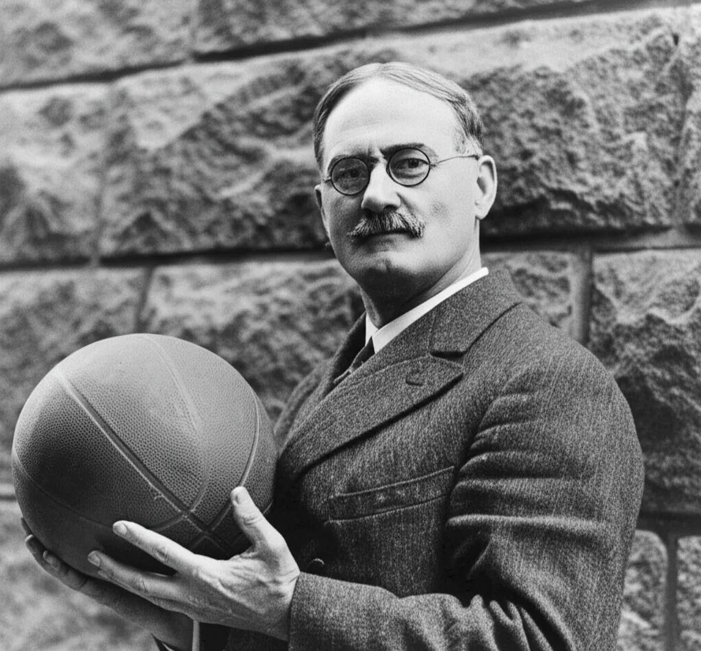

История и суть волейбола
Переход по разделам: Раздел 1 | Раздел 2 | Раздел 3
Раздел 1: История возникновения

Рис. 1. Уильям Дж. Морган — изобретатель волейбола
Волейбол был придуман в 1895 году Уильямом Дж. Морганом, преподавателем физического воспитания колледжа YMCA в городе Холиок (штат Массачусетс, США). Изначально игра носила название «минтонет» и задумывалась как менее контактная альтернатива баскетболу, который к тому времени уже набирал популярность.
Первый официальный матч по новым правилам состоялся в 1896 году. Именно тогда профессор Альфред Холстед предложил переименовать игру в «волейбол» (от английского volley — «удар с лёта», ball — «мяч»), поскольку основной смысл заключался в непрерывном отбивании мяча в воздухе.
Ключевые даты в истории волейбола:
- 1895 — изобретение игры Уильямом Морганом
- 1896 — первое официальное название «волейбол»
- 1900 — публикация первых официальных правил
- 1947 — основание Международной федерации волейбола (FIVB) в Париже
- 1964 — включение волейбола в программу Олимпийских игр в Токио
- 1996 — пляжный волейбол дебютировал на Олимпиаде в Атланте
Распространение волейбола по миру шло быстрыми темпами благодаря сети колледжей YMCA, которые имели филиалы во многих странах. Уже к началу XX века игра стала популярной в Канаде, странах Азии и Латинской Америки. В России волейбол появился в 1914 году и быстро завоевал любовь спортсменов.
Сегодня волейбол входит в число самых популярных видов спорта в мире. По данным FIVB, более 800 миллионов человек регулярно играют в волейбол или следят за соревнованиями. Профессиональные лиги существуют в десятках стран, а международные турниры собирают миллионы зрителей у экранов.
Раздел 2: Основные принципы игры
Цель волейбола — перебить мяч через сетку таким образом, чтобы он коснулся игровой площадки соперника, либо чтобы соперник допустил ошибку. Каждая команда имеет право максимум на три касания мяча (не считая блока) перед тем, как отправить его на сторону противника.
Мяч вводится в игру подачей, которую выполняет игрок задней линии из-за лицевой линии. После каждого выигрыша розыгрыша право подачи переходит к следующей команде, а игроки перемещаются по площадке по часовой стрелке — это называется ротацией. Такая система гарантирует, что каждый игрок побывает на всех позициях.
За многие десятилетия правила волейбола претерпели значительные изменения. Например, до 1999 года очки начислялись только команде, которая подавала мяч. Введение системы «ралли-поинт» (очко за каждый розыгрыш) сделало игру более динамичной и предсказуемой по времени.
Фундаментальные правила волейбола:
- На площадке одновременно находятся по 6 игроков от каждой команды
- Мяч не должен касаться пола на своей стороне — это ошибка
- Один игрок не может коснуться мяча два раза подряд (кроме блока)
- Сетка является нейтральной зоной — касание её игроком считается нарушением
- Розыгрыш продолжается до тех пор, пока мяч не коснётся площадки или не будет совершена ошибка
Помимо классического волейбола, существуют его разновидности, которые имеют свои особенности, но сохраняют базовые принципы игры. Они различаются количеством игроков, размерами площадки и некоторыми правилами.
Раздел 3: Разновидности волейбола
Пляжный волейбол — самая известная альтернатива классической игре. Он проводится на песчаной площадке размером 16×8 метров, а в каждой команде участвуют только два игрока. Отсутствие замен и меньшая площадь площадки делают этот вид спорта особенно требовательным к физической подготовке спортсменов.
Пионербол — упрощённая версия волейбола, популярная в школах и среди начинающих. Главное отличие заключается в том, что мяч не отбивают, а ловят руками и затем бросают через сетку. Это позволяет новичкам освоить базовые принципы игры без риска получить травму от сильного удара.
Популярные разновидности волейбола:
- Пляжный волейбол — 2 игрока в команде, песчаная площадка
- Пионербол — мяч ловят и бросают, используется в школах
- Мини-волейбол — уменьшенная площадка, 3-4 игрока в команде
- Паралимпийский волейбол (сидячий) — для спортсменов с ограниченными возможностями
- Снежный волейбол — проводится на снегу, популярен в горных регионах
Каждая из этих разновидностей сохраняет главный принцип волейбола — командное взаимодействие и непрерывный обмен мячом через сетку. Выбор варианта зависит от условий, количества участников и уровня подготовки игроков.